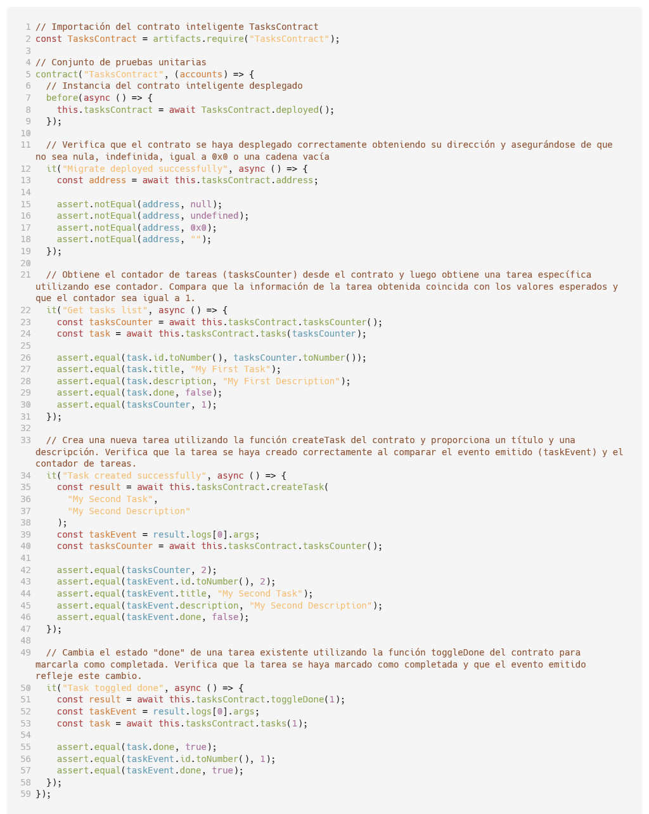
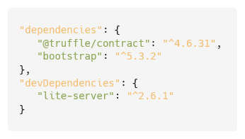
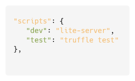

El objetivo del presente material es brindar una experiencia didáctica y práctica en el desarrollo de contratos inteligentes en Solidity, así como su interacción a través de una interfaz de usuario, utilizando tecnologías como NodeJS, Truffle, Ganache y Metamask. La aplicación propuesta es del estilo "ToDo List" que permitirá a los usuarios crear tareas y darlas por completadas de manera eficiente y segura a través de la cadena de bloques Ethereum.
Antes de iniciar
Se realiza una explicación más detallada del proyecto a desarrollar, se enuncian algunos conceptos clave y se dictan las pauta para preparar el entorno de desarrollo.
Paso a paso
Se muestra una guía que permite ir avanzando paso a paso en el desarrollo del proyecto.
- 1. Creación del proyecto
- 2. Creación del contrato inteligente
- 3. Preparando el despliegue del contrato inteligente
- 4. Configuración de Truffle
- 5. Compilación y Despliegue del contrato inteligente
- 6. Interactuando con el contrato inteligente desde consola
- 7. Realizando pruebas al contrato inteligente
- 8. Creación de la interfaz de usuario
- 9. Interactuando con la DApp
Conceptos básicos ▲
Conocer estos conceptos, te permitirá avanzar en el desarrollo de este proyecto, comprendiendo a profundidad cada paso de los que se proponen.
Blockchain: es una especie de base de datos pública que se actualiza y se comparte en una serie de ordenadores conectados en red.
Contrato inteligente: también se conoce como Smart Contract, es un código que reside en la blockchain y se ejecuta exactamente como ha sido programado. Una vez que estos se implementan en la red, ya no pueden modificarse.
Aplicación descentralizada: también es conocida como (DApp), por sus siglas en inglés, y no es más que una aplicación diseñada en una red descentralizada puntu a punto, que combina un contrato inteligente y una interfaz de usuario frontal.
Ethereum: es una cadena de bloques con un ordenador integrado en ella. Es la base para construir aplicaciones y organizaciones de una manera descentralizada, sin permisos, resistente a la censura.
Ether: ETH es la criptomoneda nativa de Ethereum. El propósito de ETH es posibilitar la existencia de un mercado de computación. Un mercado de este tipo proporciona un incentivo económico a los participantes que verifican y ejecutan las solicitudes de transacciones y proporcionan recursos informáticos a la red.
Máquina Virtual de Ethereum: también conocida como EVM, es un ordenador único y convencional, cuyo estado han acordado todos los participantes de la red.
Compilar: consiste en traducir el código fuente del contrato inteligente, a un formato que la máquina virtual de la blockchain pueda entender y ejecutar. Durante este proceso, se verifican errores y se genera el código objeto que se puede ejecutar en la blockchain.
Desplegar: implica tomar el código compilado del contrato inteligente y cargarlo en la blockchain para que se convierta en una entidad autónoma y funcional en la red, creando una instancia única de ese contrato en la blockchain, que tiene su propia dirección y estado.
Orientaciones generales ▲
Para llevar a feliz término el presentente proyecto y facilitar tu aprendizaje, te propongo una serie de sugerencias a seguir:
- Realiza una lectura general de todo el documento antes de comenzar a descargar las herramientas, preparar el entorno o escribir código. Esto te dará una visión general del proyecto y te sentirás más seguro a la hora de comenzar con el desarrollo.
- El copiar y pegar no está mal, de hecho, permite avanzar con mayor rapidez; pero debes entender el código. Por tal motivo, todo el código de este proyecto se encuentra comentado, una buena práctica a seguir a la hora de programar. La sugerencia es que leas los comentarios, entiendas cada una de las funcionalidades y no te permitas avanzar dejando lagunas de conocimiento.
- Realiza las actividades que se proponen al final y tómalo como un reto personal. Si has comprendido todo el desarrollo del proyecto, te has detenido a analizas cada funcionalidad, instrucción y línea de código, no te será para nada complicado salir victorioso.
- No creas todo lo que te estoy enseñando en este manterial, consulta la Documentación útil porque esta será capaz de ampliar tus conocimientos sobre las tecnologías utilizadas.
- Si quieres ser un buen estudiante, es necesario que te conviertas en un buen profesor; por tanto, si te ha resultado útil lo aprendido aquí, no dudes en compartirlo con otros que desean aprender sobre la materia tratada.
Hablemos del proyecto ▲
Desarrollar este proyecto te brindará una experiencia didáctica y práctica en el desarrollo de contratos inteligentes utilizando Solidity como lenguaje de programación, interactuarás con el contrato inteligente creado por medio de una interfaz de usuario, en la que reafirmarás algunos conocimientos sobre HTML, CSS y JavaScript.
La aplicación descentralizada que estás a punto de crear, tendrá un estilo "ToDo List" que permitirá a los usuarios crear y dar por completadas las tareas de manera eficiente y segura en la cadena de bloques Ethereum.
Si de tecnologías se trata, utilizarás:
- NodeJS, como entorno de tiempo de ejecución de JavaScript basado en el motor V8 de Google Chrome, para ejecutar código JavaScript en el lado del servidor.
- NPM, un administrador de paquetes para el entorno de tiempo de ejecución NodeJS que te permitirá instalar, compartir, actualizar y gestionar bibliotecas y paquetes de código reutilizable.
- Visual Studio Code, será el editor de códigos que nos permitirá el desarrollo web y JavaScript, con la instalación de algunas extensiones.
- Solidity, como lenguaje de programación para desarrollar el contrato inteligente que gestionarán las operaciones de la DApp en la blockchain.
- Truffle, será el framework de desarrollo que facilitará la creación, compilación y migración del contrato inteligente creado; así como la realización de pruebas unitarias.
- Ganache, es un entorno de desarrollo personal que te permitirá simular una red blockchain local. La utilizaremos para desplegar y probar el contrato inteligente de la aplicación en un entorno controlado.
- Metamask, es una extensión de navegador web que permite a los usuarios interactuar con aplicaciones descentralizadas a través de una interfaz amigable. La integraremos a la aplicación creada para que los usuarios puedan interactuar con la blockchain utilizando sus billeteras Ethereum.
- Lite-server, es un servidor de desarrollo web ligero diseñado para facilitar el desarrollo y la prueba de aplicaciones web locales.
- Bootstrap, como marco de diseño de código abierto, la utilizaremos para la creación de la interfaz de usuario adaptable, de manera más rápida y eficiente.
Documentación útil ▲
La siguiente bibliografía, corresponde a la documentación oficial de cada una de las tecnologías utilizadas para el desarrollo del presente proyecto:
- Ethereum: https://ethereum.org/en/developers/docs
- NodeJS: https://nodejs.org/en/docs
- NPM: https://docs.npmjs.com
- Visual STudio Code: https://code.visualstudio.com/docs
- Solidity: https://docs.soliditylang.org/en/v0.8.22
- Truffle: https://trufflesuite.com/docs/truffle
- Ganache: https://trufflesuite.com/docs/ganache
- MetaMask: https://docs.metamask.io
- lite-server: https://github.com/johnpapa/lite-server
- Bootstrap: https://getbootstrap.com/docs/4.1/getting-started/introduction
Preparando el entorno ▲
Para desarrollar el proyecto, es necesario instalar una serie de aplicaciones. A continuación, se describen los pasos a seguir para ello.
NodeJS
Es necesario acceder al sitio https://nodejs.org/en/download, descargar el instalador de acuerdo a la plataforma a utilizar e instalar el software siguiendo los pasos correspondientes.
Al instalar NodeJS, también se instalará su gestor de paquetes NPM.
Para la realización del presente proyecto, se utilizó la versión 18.16.1 de NodeJS.
Visual Studio Code
El instalador del que será nuestro editor de código, se encuentra en la dirección https://code.visualstudio.com/download en la que, de acuerdo a la plataforma, se debe descargar e instalar el software.
Una vez instalado, desde el propio entorno del editor de código, se recomienda instalar la extensión llamada Solidity, que permite que Visual Studio Code reconozca y autocomplete la sitaxis de este lenguaje de programación para contratos inteligentes.
Truffle
Para instalar Truffle, basta con abrir una consola, escribir el comando npm install truffle -g y presionar la tecla Enter.
Ganache
Descargar e instalar desde el sitio https://github.com/trufflesuite/ganache-ui/releases de acuerdo a la plataforma en la que se trabaje.
Una vez instalado, abrir Ganache y crear un nuevo espacio de trabajo a través del botón NEW WORKSPACE, colocar un nombre y presionar el botón SAVE WORKSPACE.
Una vez creado, se debe acceder a dicho espacio de trabajo en el que se mostrarán, entre otros aspectos, las 12 palabras que aparecen con el título MNEMONIC. Estas deben ser copiadas pues serán útiles para la realización del siguiente paso.
Metamask
Metamask se instala como una extensión del navegador web; esto es posible, accediendo al enlace https://metamask.io/download/, seleccionado el navegador en uso y añadiendo la extesión al mismo.
Una vez instalada la extensión de Metamask, se abrirá una nueva pestaña del navegador en la que, luego de aceptar los Términos de uso, se debe presionar el botón Importar una cartera existente
En un nueva ventana se preguntará sobre la disposición de mejorar Metamask, a lo que es posible Aceptar o No.
Se le solicitará introducir las 12 palabras que brindó Ganache en el paso anterior. Una vez introducidas, presionar el botón Confirmar frase secreta de recuperación.
Se solicitará entonces una contraseña de acceso a Metamask, esta debe poseer un mínimo de 8 caracteres. Se debe, además, marcar la opción de haber entendido que no es posible que Metamask le ayude a recuperar la contraseña si esta es olvidada. Una vez hecho esto, presionar el botón Importar mi cartera.
Se le mostrará un mensaje de éxito y debe presionar los botones Entendido, Siguiente y Hecho.
Ahora. es necesario agregar la red de prueba que ha creado Ganache; para ello, desde la ventana de Metamask, en la esquina superior izquierda, presione sobre Ethereum Mainnet y seleccione Agregar red
Como la red que se desea agregar no se encuentra en la lista, seleccione la opción de Agregar una red manualmente.
Estos son los datos que obligatoriamente debe introducir para agregar la red local de Ganache:
Nombre de la red: Ganache
Nueva dirección URL de RPC: HTTP://127.0.0.1:7545
Identificador de cadena: 1337
Símbolo de moneda: ETH
Una vez introducir estos datos, debe presionar el botón Guardar y si todo ha ido bien, se mostrará un mensaje de éxito solicitándole si desea cambiar a la red recién añadida.
Al realizarse el cambio de red, se mostrará el balance de 1000 ETH en su billetera.
Paso 1 - Creación del proyecto ▲
Para comenzar con la creación del proyecto, lo primero sería que te dirigieras a algún directorio de tu dispositivo y crearas una carpeta denominada DApp-ToDoList u otro nombre similar.
Haciendo clic derecho encima de la carpeta recién creada, aparecerá la opción de Abrir con Code / Open with Code. Esto, abrirá el Visual Studio Code en dicho directorio.
Desde el propio editor, es posible tener disponible una subventana de la consola de comandos; esto se logra accediendo al menú Terminal del Visual STudio Code y seleccionando la opción Nuevo terminal.
Corresponde ahora inicializar nuestro proyecto utilizando para ello el gestor de paquetes de NodeJS, denominado NPM; para ello, desde la consola utiliza e comando npm init -y y presiona la tecla Enter.
Esto creará un archivo denominado package.json cuyo contenido es el siguiente:
Puedes escribir una breve descripción en la parte de description, así como algunas palabras clave separadas por coma en el acápite keywords.
Inicialicemos ahora truffle en nuestro proyecto utilizando el comando truffle init y presionando la tecla Enter.
Este comando creará tres directorios: contracts, migrations y test; así como el archivo truffle-config.js
Paso 2 - Creación del contrato inteligente ▲
Para crear el contrato inteligente que utilizaremos para este proyecto, usemos el comando truffle create contract TasksContract
Si nos dirigimos a la carpeta contracts de nuestro proyecto, encontraremos un nuevo archivo denominado TasksContract.sol con elementos necesarios para comenzar a escribir nuestro contrato inteligente.
La Línea 1, se refiere a una directiva especial utilizada en código fuente del lenguaje Solidity que se utiliza para indicar el tipo de licencia bajo la cual se distribuye el código del contrato inteligente. En este caso, se está utilizando la Licencia MIT que no es más que una licencia de código abierto muy popular que permite a las personas utilizar, modificar y distribuir el código con bastante libertad, siempre y cuando se incluya el aviso de derechos de autor y la declaración de la licencia.
En la Línea 2, se especifica la versión del compilador de Solidity que se debe utilizar para compilar el contrato; en este caso, una versión mayor o igual a la 0.4.22 y menor a la 0.9.0.
A continuación se muestra todo el código de nuestro contrato inteligente con sus respectivos comentarios.
Además de copiar y pegar, es importante que leas para qué se utiliza cada una de las instrucciones en Solidity empleadas.
Paso 3 - Preparando el despliegue del contrato inteligente ▲
Para ir preparando el camino para el despliegue de nuestro contrator inteligente TasksContract.sol, es necesario crear un nuevo archivo dentro del directorio migrations; a este archivo le llamaremos 1_Migration_TasksContract.js
El contenido de este archivo, así como la explicación de cada una de las instrucciones utilizadas, se describen a continuación:
Paso 4 - Configuración de Truffle ▲
Para configurar Truffle, utilizaremos el archivo truffle-config.js que se encuentra en la raíz de nuestro proyecto; lo utilizaremos para configurar las redes en las que se desplegará el contrato inteligente creado, así como la versión del compilador.
Dentro del acápite networks, configuremos la red de pruebas para el despliegue de nuestro contrato inteligente, descomentando y configurando las siguientes lineas:
Como host se establece el 127.0.0.1 que es el host local que estamos utilizando en la red de pruebas de Ganache; como port, el 7545 y en el network_id se puede establecer el * para utilizar cualquier red.
También es necesario dirigirse al acápite de compilers y establecer la versión a la 0.8.6
Paso 5 - Compilación y despliegue del contrato inteligente ▲
Para desplegar nuestro contrato inteligente en la red de pruebas de Ganache, ejecutemos en la consola el comando truffle compile
Como resultado, puedes notar que se creó el directorio contracts, dentro del directorio build con un nuevo archivo denominado TasksContract.json
Cada vez que ejecutemos el comando truffle compile, se compilarán todos aquellos contratos inteligentes que posean algún cambio desde la última vez que fueron compilados y siempre, partiendo desde su archivo de migración correspondiente.
Realicemos ahora un despligue de nuestro contrato en la red local de Ganache, nuestra blockchain local; para ello, ejecutemos en la terminal el comando truffle deploy
Es válida aclarar que el despligue parte desde una compilación y sí produce cambios en el estado de la blockchain que incurre en un gasto. Esto se puede observar si se visualiza la interfaz de Ganache, donde ha ocurrido una modificación del balance de la primera cuenta.

Paso 6 - Interactuando con el contrato inteligente desde consola ▲
Truffle nos permite interactuar con nuestro contrato inteligente previamente desplegando en la red blockchain, por medio de la consola; para ello, utilizaremos el comando truffle console
PRIMERO, almacenemos el despliegue de nuestro contrato inteligente en una valiable para poder interactuar con él. Utilicemos la siguiente instrucción en la consola de Truffle: contract = await TasksContract.deployed()
SEGUNDO, preguntemos por la dirección de nuestro contrato inteligente, a través de la instrucción contract.address
TERCERO, accedamos a la primera tarea que se crea por defecto por medio del constructor al desplegar nuestro contrato inteligente. Para ello, utilicemos la instrucción contract.tasks(1)
CUARTO, creemos una tarea utilizando el método público createTask() de nuestro contrato, por medio de la instrucción contract.createTask('Tarea de prueba', 'Esta es una tarea de prueba')
QUINTO, visualicemos esa tarea de prueba recién creada utilizando la intrucción contract.tasks(2)
SEXTO, cambiemos la tarea 2 a realizada; para ello, utilicemos la instrucción contract.toggleDone(2)
SÉPTIMO, para comprobar que el cambio se realizó correctamente, utilicemos la instrucción contract.tasks(2)
Paso 7 - Realizando pruebas al contrato inteligente ▲
El conocimiento anterior, nos permitirá implementar un conjunto de pruebas unitarias a nuestro contrato inteligente utilizando Truffle.
Realizar pruebas antes de realizar el despliegue definitivo de contratos inteligentes en una blockchain real, es de suma importancia por dos aspectos fundamentales: uno, porque cuesta dinero el despliegue y dos, porque una vez desplegado el contrato, no es posible modificarlos.
Para la realización de algunas pruebas unitarias a nuestro contrato inteligente, creemos un nuevo archivo dentro del directorio test y a este archivo le llamaremos Test_TasksContract.js
A continuación, el contenido del archivo de pruebas creado con cada una de las explicaciones necesarias para entender sus instrucciones:
Una vez creado el archivo con todo su contenido, estamos en condiciones de ejecutar las pruebas; para ello, utilizaremos en consola el comando truffle test
Si todo ha ido bien, este debería ser el resultado:
Después de compilar el contrato inteligente, comprueba que la migración se haya realizado correctamente, obtiene el listado de tareas, crea una nueva tarea y, por último, establece como finalizada esa tarea.
Paso 8 - Creación de la interfaz de usuario ▲
Directorio y archivos
Para comenzar con la creación de la interfaz de usuario que interactuará con nuestro contrato inteligente, es necesario crear un nuevo directorio en la raíz de nuestro proyecto denominada client
Nuestra interfaz de usuario será construida utilizando html, css y javascript; por lo tanto, crearemos dentro del directorio client, 4 archivos:
- index.html contendrá toda la estructura de la interfaz de usuario en código html.
- style.css donde se establecerán los estilos de la interfaz de usuario.
- ui.js contendrá funcionalidades sobre la interacción con la interfaz de usuario.
- app.js constituye el archivo principal para escribir el código de la interfaz de usuario.
Instalación y configuración de módulos
Con el objetivo de agilizar el proceso de creación de la interfaz de usuario para interactuar con nuestro contrato inteligente, es necesario instalar dos módulos. Instalaremos además un módulo adicional para poder interactuar con nuestro contrato inteligente:
- lite-server como servidor ligero que permitirá visualizar y probar los cambios que se realicen en la interfaz.
- bootstrap que mejora la visualidad de la interfaz y su adaptabilidad.
- @truffle/contract permite interactuar con el contrato inteligente desde la interfaz de usuario.
Para instalar estos tres módulos, desde la consola, utilicemos el comando npm install lite-server -D primero, y luego, npm install bootstrap @truffle/contract
En el caso de lite-server, le estamos indicando que solo lo utilizaremos para fines de desarrollo; ello justifica la inclusión del parámetro -D al final.
La instalación de estos módulos, habrá modificado nuestro archivo package.json, quedando de la siguiente forma en los acápites de dependencias y dependencias de desarrollo:
Esta instalación habrá creado un nuevo directorio en la raíz de nuestro proyecto denominado node_modules que contiene una serie de directorios, necesario para la ejecución de nuestro proyecto.
Para el caso específico de lite-server, es necesario especificar algunas configuraciones sencillas; para ello, crearemos un archivo denominado bs-config.json en la raíz de nuestro proyecto.
El contenido de este archivo sería el siguiente:
En la configuración, le estamos especificando al lite-server, que sirva los directorios /client y /buil/contracts; además, estamos estableciendo que tenga acceso al directorio /node_modules por medio de a ruta /libs. Esto ultimo, con el objetivo de poder utilizar, desde el html, los archivos de bootstrap. También le estamos especificando que funcione utilizando el puerto 3000.
Configuraciones adicionales en el package.json
Realicemos algunas configuraciones adicionales en nuestro archivo package.json en el acápite scripts, el que debería quedar como sigue:
Con la realización de estos cambios, a partir de ahora podemos ejecutar las pruebas a nuestro contrato inteligente en consola, ejecutando el comando npm run test y para visualizar nuestra interfaz de usuario, utilizaremos el comando npm run dev
Ejecutemos en consola el comando npm run dev, el que debe abrir en nuestro navegador la URL http://localhost:3000/ y visualizar en tiempo real los cambios que realicemos a nuestra interfaz de usuario.
Estructura y estilo de la interfaz de usuario
Creemos ahora la estructura de nuestra interfaz de usuario utilizando html. Para ello, escribiremos en el archivo index.html, ubicado dentro del directorio client, el que quedaría con el siguiente contenido:
También establezcamos algunos estilos generales que incluiremos en el archivo style.css, ubicado dentro del directorio client. Podrás notar que son muy pocos porque hemos delegado en Bootstrap la mayoría de ellos.
Así quedaría el contenido de nuestro archivo style.css:
Creando la lógica de interacción con la blockchain
Una vez que tenemos la estructura y estilo de la interfaz de usuario, corresponde crear la lógica de interacción con el contrato inteligente en la blockchain. Utilizaremos para ello el archivo app.js ubicado dentro del directorio client.
El contenido del archivo app.js quedaría de la siguiente forma:
Funciones para la interacción con la interfaz de usuario
Es el momento de crear las funciones que nos permitan interactuar con la interfaz de usuario; para ello, utilizaremos el archivo ui.js ubicado dentro del directorio client.
Este sería el contenido del archivo:
Paso 9 - Interactuando con la DApp ▲
Ya esmos en condiciones de interactuar con la DApp creada por medio de su interfaz de usuario, la cual debe lucir de la siguiente forma:
Si nuestra MetaMask está conectada a la blockchain local de Ganache y nos hemos autenticado en ella, al presionar en Conectar, se abrirá la ventana de la billetera solicitando la cuenta con la que deseamos conectarnos a nuestra DApp que, por lo general, es la primera; así que podemos presionar el botón Siguiente.
Se nos mostrará entonces una nueva ventana de MetaMask que es de suma importancia en el mundo de las DApps, y es precisamnete cuando visualizamos los permisos que está requiriendo nuestra aplicación; en este caso, está solicitando ver las direcciones de nuestras cuentas, a lo cual podemos responder que sí, presionando el botón Conectar.
A partir de ahora, la DApp quedará conectada a la primera cuenta de nuestra billetera MetaMask. Ello es evidente porque ahora se muestra la dirección de nuestra billetera en la interfaz de usuario.
Añadamos ahora una tarea; para ello, escribamos un título, una descripción y presionemos el botón Guardar. Esta acción nos abrirá nuestra billetera MetaMask para mostrarnos los datos correspondientes a esta transacción que debemos aprobar presionando el botón Confirmar.

¡Aparecen dos tareas creadas! Claro, la primera la creamos por medio del constructor de nuestro contrato inteligente, ¿recuerdas?; pero esto solo ocurre por única vez. La segunda, sí es la tarea cuyos datos introdujiste en el formulario de la interfaz de usuario.
La segunda interacción que podemos probar es dar por finalizada la tarea recién creada; para ello, acciona el interruptor de la misma e inmediatmente se abrirá una ventana de MetaMask para aprobar la transacción.
A partir de ahora, la tarea aparecerá como aprobada en nuestra interfaz de usuario pero, lo más importante, es que ha quedado guardada como una transacción inmutable en la blockchain.
Por último, probemos desvincular nuestra billetera MetaMask de la DApp; para ello, vayamos a nuestra billetera MetaMask y presionemos el icono de la esquina superir derecha, semejante a un globo del mundo.
Se mostrará nuestra cuenta conectada a la DApp. Para concluir el proceso de desconexión, accede a los tres puntos al lado de la misma y presiona la opción Desconectar esta cuenta.
A partir de ahora, nuestra cuenta ha sido desconectada de la DApp y la interfaz de usuario lucirá como en el estado inicial. Si pruebas conectarte nuevamente, podrás ver todas las tareas que hayas creado con sus respectivos estados de realizadas o no.
Y para finalizar ▲
Ha sido un verdadero placer poder guiar tu aprendizaje utilizando este proyecto como pretexto.
Si has seguido las instrucciones al pie de la letra y has puesto en práctica las recomendaciones iniciales, te reto a resolver las siguientes actividades que llevarán tu conocimiento y habilidades al próximo nivel.
¡Éxitos en tu vida profesional!
Actividades propuestas
- Piensa en la forma en que implementarías las funcionalidades de editar una tarea y también de eliminarla.
- Atrévete a implementar estas funcionalidades de editar y eliminar tareas. No olvides comentar el código que vas escribiendo para que otros entiendan tu lógica de hacer las cosas.
- Hazme saber sobre tus avances o bloqueos durante el proceso; siempre estoy a la distancia de un mensaje: ramiro.mejias@gmail.com